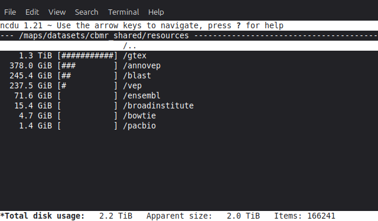

Data Storage Best Practices¶
This page describes ways in which to clean up your data in order to save space (and thereby storage costs), as well as techniques for structuring your analyses to make this easier.
Attention
Always remember to carry out compression and similar tasks on a compute node. See the Interactive sessions section for how to do so.
General tips for reducing storage usage¶
The following tips can be used to reduce the amount of space that you use, and thereby storage costs:
Use the data in
/datasets/cbmr_shared, instead of downloading public datasets yourself. Thecbmr_sharedfolder contains many commonly used, public datasets, and can be accessed by everyone with access to Esrum. See the Common datasets for more information, and for how to request additional datasets.Avoid making copies of datasets. Instead, use symbolic links to refer a shared copy of the dataset, that could for example be stored in
/datasets/cbmr_shared, in a/datafolder, or similar location.Always delete intermediate files when they are no longer needed. For example, if your workflow looks something like the following, then add a step to your workflow that deletes the
intermediate.datfile:$ program1 input.dat > intermediate.dat $ program2 intermediate.dat > final.results
In some pipeline frameworks, this can be done automatically: For example, in Snakemake, you can flag output files and folders using the temp function. Refer to your pipeline documentation for more information.
Do not intermingle intermediate and final results: For example, using the above, a better approach would be to place output in either a
resultsfolder (if we want to keep it) or in atempfolder (if we do not want to keep it):$ mkdir results temp $ program1 input/input.dat > temp/intermediate.dat $ program2 temp/intermediate.dat > results/final.results
This makes it trivial to delete no longer needed files, without risking accidentally deleting the actual results. In general, it is recommended to cleanly separate scripts and other related files, input, output, and intermediate files.
Always store results in compressed formats, if at all possible. For plain-text formats, such as VCF, this can lead to reducing file-sizes by 90% or more. See the Compressing files to save space section below for a few examples of how to do this.
When possible, use pipes when decompressing data, instead of saving the decompressed data. This is useful when software does not support reading compressed data:
# 1. Pipe decompressed data to STDIN $ zcat my-data.dat.gz | my-program # 2. Pipe decompressed data to STDIN using filename for STDIN $ zcat my-data.dat.gz | my-program /dev/stdin # 3. Pipe decompressed data using process substitution $ my-program <(zcat my-data-1.dat.gz) <(zcat my-data-2.dat.gz)
The first example requires that the program explicitly supports reading from STDIN, which is not always the case. However, in many cases this can still be accomplished by using the special file
/dev/stdinthat maps to a process' STDIN. Finally, process substitution allows the output from one or more processes to be piped using named file-handles. This is useful if the program needs to read from multiple files.Warning
Not all programs can read data using this method. In particular, if the program needs to seek (jump around) in the input file, or if the program closes and re-opens the input, then these approaches will fail.
Locating large datasets¶
The Data Analytics Platform can, on request, provide an overview of
storage usage for projects and datasets: A total for each datasets, a
total for each apps, data and scratch folder in your
projects, and a total for each user in each of the people folders in
your project. Simply contact us with a list of
projects and datasets for which you wish to receive this information.
Once you have a list of candidate folders, you can use the following commands to figure out what files or folders are taking up the most storage:
The ncdu command may be used to interactively explore where storage is being used in a project or dataset. For example, to explore the
/datasets/cbmr_sharedfolder,$ cd /datasets/cbmr_shared $ ncdu

The
ducommand does the same thing, but is not interactive. It mainly useful if you want to look at a subset of folders:$ cd /datasets/cbmr_shared/resources $ du -chs * | sort -rh 2.3T total 1.3T gtex 379G annovep 246G blast 238G vep 72G ensembl 16G broadinstitute 4.7G bowtie 1.4G pacbio
The
findcommand can be used to find files over a certain size:$ cd /datasets/cbmr_shared $ find . -type f -size +10G
For most part, it is recommended to use the ncdu program described
above.
Compressing files to save space¶
Large datasets should always be stored using compressed formats, if possible. In some cases this is not possible while analyses are being performed, in which case the files should be compressed when they are not actively being used.
Tip
No compression algorithm can beat not storing the data in the first place. Therefore, always consider whether or not you actually need to keep the files around.
Compressible files can be located using the big_text tool available on
Esrum. For example, to check for compressible files in
/datasets/cbmr_shared:
$ srun --pty -- bash
$ cd /datasets/cbmr_shared
$ module load big_text
$ big_text -h | sort -rh
Files checked = 173728
Small files skipped = 155771
Non-files skipped = 17349
Files ignored = 579
Candidate files found = 29
Size of candidate files = 130.2 GB
Est. size saved by compression = 96.6 GB
Errors encountered = 0
31.7 GB ./resources/annovep/v104.3/custom/dbNSFP4.2a.zip
11.8 GB ./resources/broadinstitute/gatk-resource-bundle/hg38/v0/1000G.phase3.integrated.sites_only.no_MATCHED_REV.hg38.vcf
10.9 GB ./databases/1000genomes/20130502/supporting/gqt_files/v0/ALL.phase3_shapeit2_mvncall_integrated_v5a.20130502.genotypes.vcf.gz.gqt
10.6 GB ./databases/1000genomes/20130502/supporting/gqt_files/v1/ALL.phase3.autosome.vcf.gz.gqt
10.2 GB ./resources/broadinstitute/gatk-resource-bundle/hg38/v0/Homo_sapiens_assembly38.dbsnp138.vcf
...
This outputs a tab-separated list of files sorted by size, from largest
to smallest. By default, big_text only checks files that are at
least 1GB in size. Run big_text --help to see available options.
Once candidates for compression have been identified, they should be compressed using the most suitable formats for the data type. For example,
*.samfiles should be converted to BAM format using samtools:$ module load --auto samtools $ samtools view -b input.sam > output.bam
For long-term storage, the
cramformat offers even greater compression, with sizes typically being around 50% of the corresponding BAM files, at the cost of not being supported by all programs. For more information, see Using CRAM within Samtools.*.vcfand other tabular files containing genomic coordinates should be compressed using bgzip, as doing so allows them to be indexed using tabix:$ module load --auto htslib $ bgzip input.vcf
If there is no standard method for compressing a datatype, simply use pigz to compress the data in a
gzipcompatible format:$ pigz input.dat
Tip
All of the above tools support using multiple threads for speeding up the compression process. To make use of this feature, you must firstly remember to reserve additional threads for your interactive session, and then you must supply the appropriate command-line option for the tool you are using:
$ srun --pty -c 4 -- bash # reserve 4 CPUs
$ samtools view -b -@ 4 input.sam > output.bam
$ bgzip -@ 4 input.vcf
$ pigz -p 4 input.dat